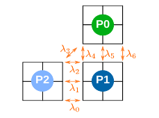
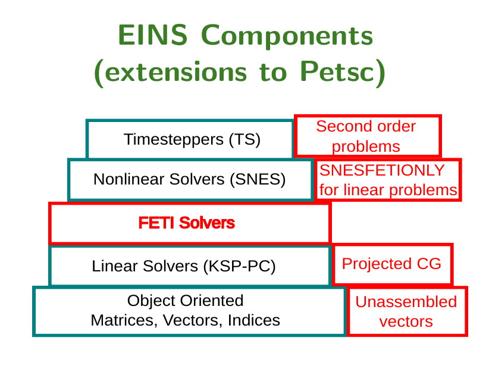
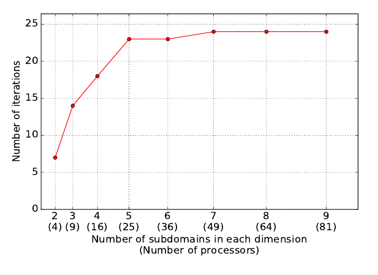
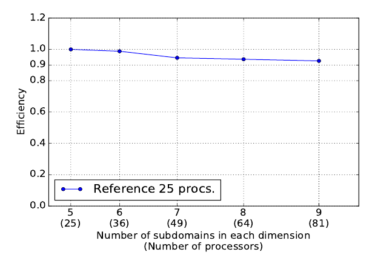

I was working in the development of Hyper-reduced order models as a strategy for tackling the high computational cost of highly non-linear thermal problems characterized by many different sources of non-linearities and, possibly, by essential boundary conditions. The kind of hyper-reduction proposed here is based on the Gappy data reconstruction methodology.
The FETI method
The FETI domain decomposition method imposes the compatibility between subdomains using Lagrange multipliers.
Design of a computational framework for FETI
To ensure extensibility and flexibility, an object-oriented design is adopted. Basic requirements already satisfied by the PETSc library.
Numerical scalability of the implemented solution for a 2D problem
Efficiency of the implemented solution for a 2D problem
